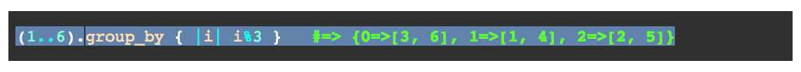
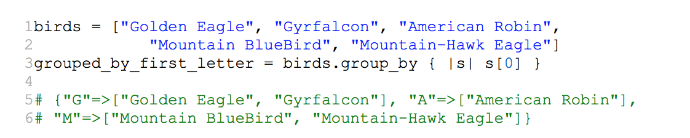

Enumerable Methods
October 12th, 2014
For this blog post I want to take a little bit closer look at the group_by method in Ruby.
In simplest terms, the group_by method breaks a collection into groups based on some given criteria. It expects to accept a bock that contains the criteria by which the items in the collection will be grouped. If no block is given, an enumerator is returned instead.
It returns a hash where each key represents a group. Each key’s corresponding value is an array containing the members of that group.
When called on an array, the group_by method loops through the array and creates a new hash specifying keys and values according to the block that is passed.
Let’s walk through the example found in the Ruby documentation:
The example takes a range of numbers, 1 through 6, as its input. The group_by method iterates through each number in the range and calculates mod 3 for each number in the range. Mod returns the remainder. When you divide by 3, there are only 3 possible outcomes for the mod. They are 0, 1, and 2.
group_by creates a new hash with each possible outcome as a key. The numbers are then grouped together by their remainder after being divided by 3.
The group_by method is a great way to iterate through a list (or array) and create an easy way to access the data stored in that list. Let’s look at one more example that iterates through a list and sorts the data by alphabetical order.
The group_by method iterates through the elements in the birds array. For each element, it looks at the first letter and then creates a key value pair for that element, or stores it in an existing key-value pair if one has already been created.
The two examples given are pretty simple to try and illustrate how the group_by method works. Hopefully, you can see the power and usefulness for this method when you start working with bigger more complex data sets.
Thanks for reading.